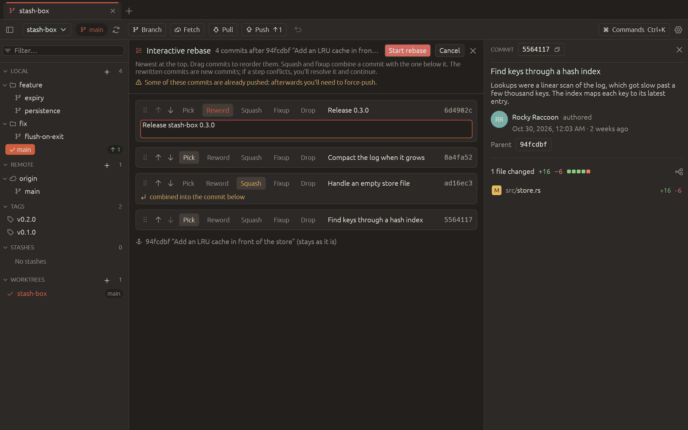
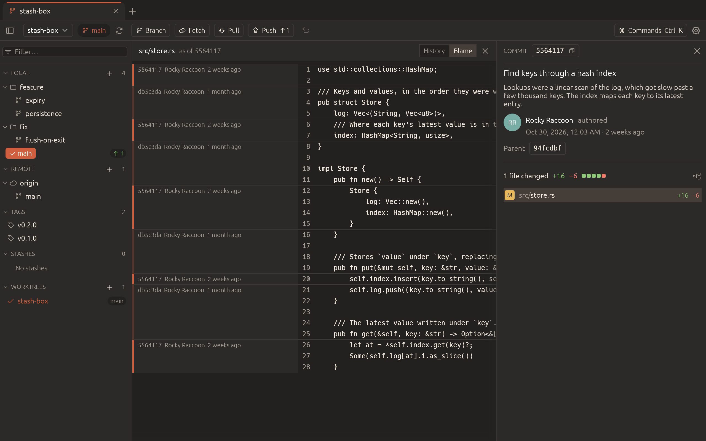
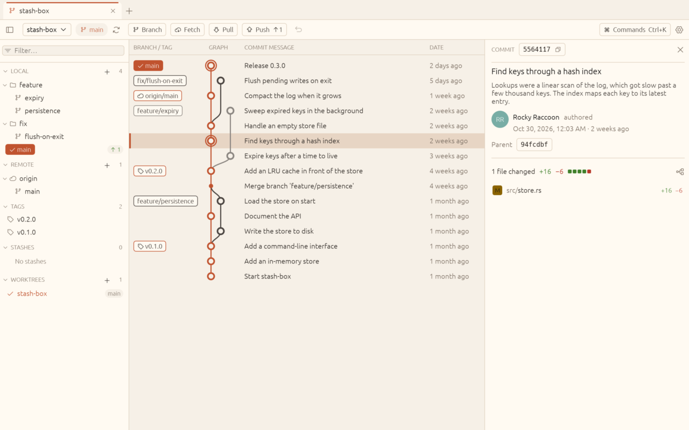
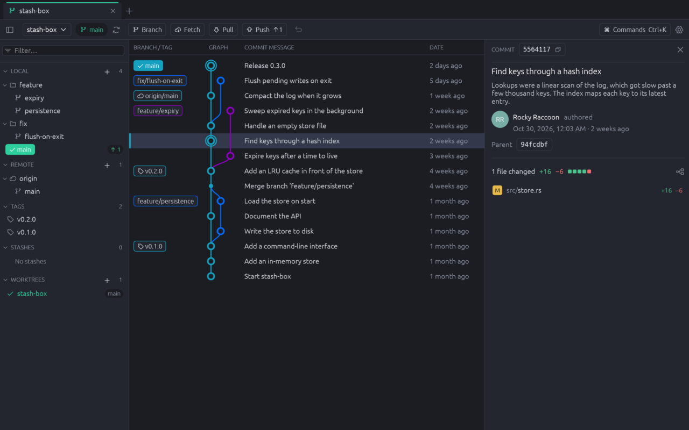
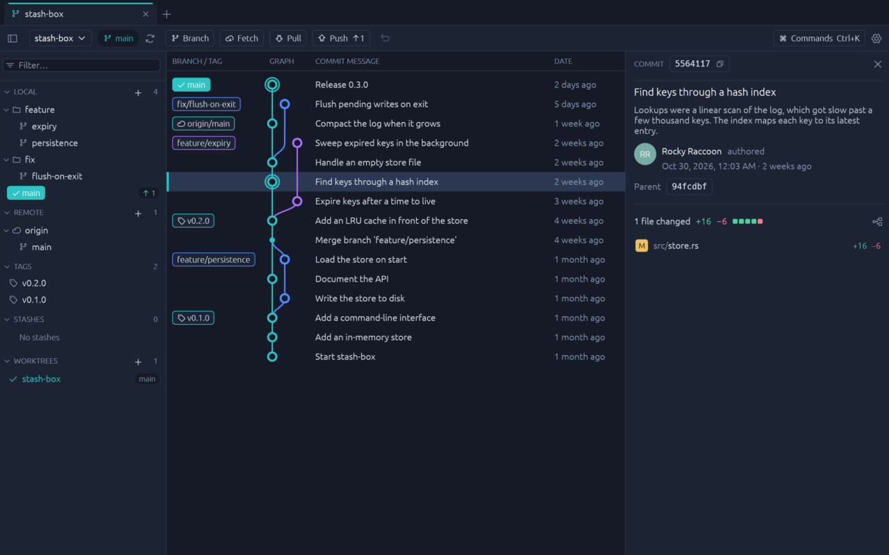
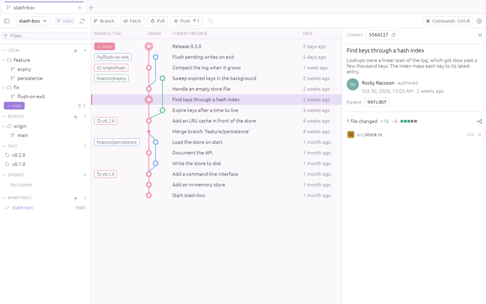
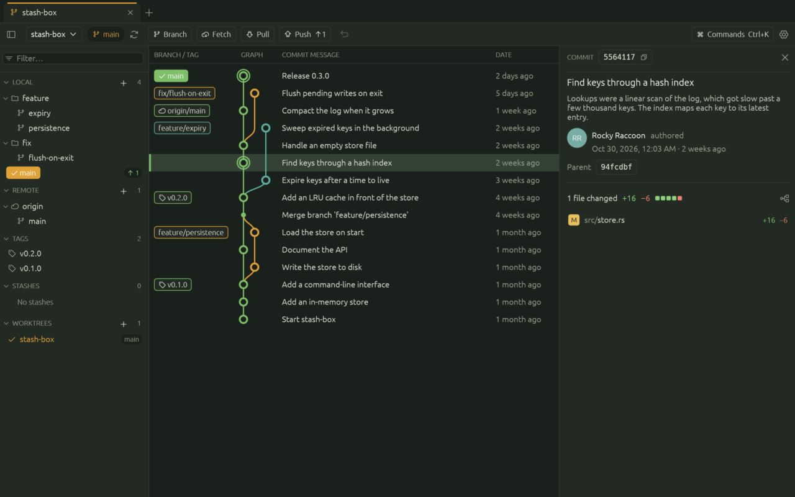
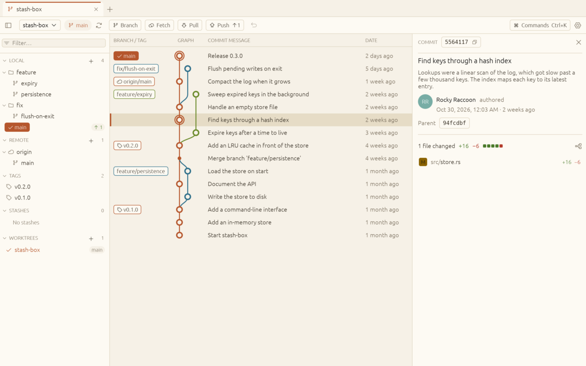

Git, without the guesswork.
Git Raccoon is a free, open-source desktop app for Git. See your whole history as a graph, and commit, branch, merge, rebase and sync with buttons, menus and drag and drop. Fast on huge repositories, and careful with your work.

Everything Git does, where you can see it
Git Raccoon runs your own git for anything that changes a repository, so your hooks, signing, SSH keys and credential helpers work exactly as they do on the command line.
Your history, as a graph
Every commit, newest at the top, with lines for branches and merges and labels for branches, tags and remotes.
- Smooth on repositories with a million commits
- Search by message, author, SHA or file
- Branches, remotes, tags and stashes a click away
Diffs you can actually read
Unified or side by side, with syntax highlighting for hundreds of languages and the changed words marked inside each line.
- Image changes shown as images
- File history that follows renames
- Large and LFS files handled gracefully

Stage exactly what you mean
Stage whole files, single hunks, or just the lines you pick in the gutter. Write the message, press Ctrl+Enter, done.
- Discarded changes go to the Recycle Bin or Trash
- Amend, with a warning if it's already pushed
- Your hooks run; if one refuses, your message is kept

Rewrite history without fear
Plan an interactive rebase by dragging commits into order and choosing pick, reword, squash, fixup or drop for each. Merge by dragging one branch onto another.
- Undo for commits, merges, rebases, resets and more
- Conflicts resolved side by side: ours, theirs or both
- Force pushes are always with lease


Fast from the keyboard
Press Ctrl+K and type a few letters to run any action, or to check out, merge, rebase onto or jump to any branch.
- Shortcuts for everyday work: fetch, pull, push, stash
- Each repository in its own tab
- Arrow keys and Page Up/Down through history

Who changed this, and why?
Blame shows the commit and author behind every line; one click takes you to that commit and its message.
- Every commit that touched a file, beside its change
- Commit details with authors, dates and parents
- Copy a SHA with one click


And the details that matter
The things you notice on day thirty, not just day one.
Protects your work
Offers to stash before a checkout, asks twice before deleting unmerged commits, and tells you how to get them back.
Syncs safely
Pull fast-forwards by default and asks before merging or rebasing; progress shows with a Cancel button.
Signs in like Git
Git Credential Manager, credential helpers and your SSH agent; passwords and new hosts are asked in a dialog.
Submodules and worktrees
See their state, update them, open them in a tab, or add a worktree on a new branch.
Keeps itself up to date
New versions download in the background; restart when it suits you, with your tabs and settings kept.
Private by default
No accounts, no tracking. Crash reports stay on your computer unless you choose to post one.
Make it yours
Seven looks, from Raccoon's warm browns to High contrast, each dark or light, or following your system's light and dark. Interface size from 90% to 150%.












Download Git Raccoon
Free, for everyone.
Windows
Windows 10 and 11, 64-bit. The installer asks where to install, and needs no administrator rights.
Installer (.exe) Portable (.zip)Linux
64-bit, on most distributions. An AppImage: make it executable and run it; nothing to install.
AppImage All releasesGit Raccoon needs Git installed. The installers aren't code-signed: on Windows choose More info, then Run anyway; on a Mac, right-click Git Raccoon in Applications and choose Open the first time. More about installing.